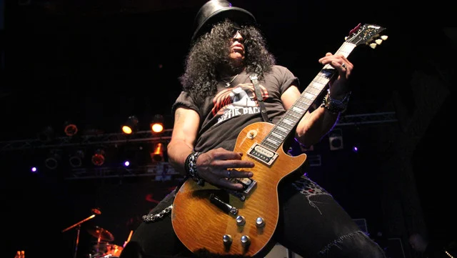

Hoy día
La formación actual cuenta con el vocalista Axl Rose, el guitarrista rítmico Richard Fortus, los tecladistas Dizzy Reed y Melissa Reese, el baterista Frank Ferrer, el bajista Duff McKagan y el guitarrista líder Slash. Estos dos últimos son considerados miembros clásicos de la agrupación y luego de una ausencia de 23 años, retomaron su lugar en la banda. La banda ha vendido más de 150 millones de álbumes en todo el mundo,1415 incluyendo más de 60 millones de álbumes solo en los Estados Unidos,16 lo que los posiciona en el puesto n°18 en la lista de los artistas con más ventas y éxito de todos los tiempos. Su álbum debut Appetite for Destruction de 1987 ha vendido 3517 millones de copias a nivel mundial y alcanzó el número 1 en el Billboard 200 en Estados Unidos. Además, cuatro canciones del álbum ingresaron en el Top 10 en la Billboard Hot 100, y «Sweet Child o' Mine» quedó en el número uno.
Saul Hudson (Hampstead, Londres; 23 de julio de 1965), más conocido por su nombre artístico Slash, es un músico y compositor británico.Es el guitarrista principal del grupo de rock estadounidense Guns N' Roses, volviendo después de casi veinte años fuera de la banda.